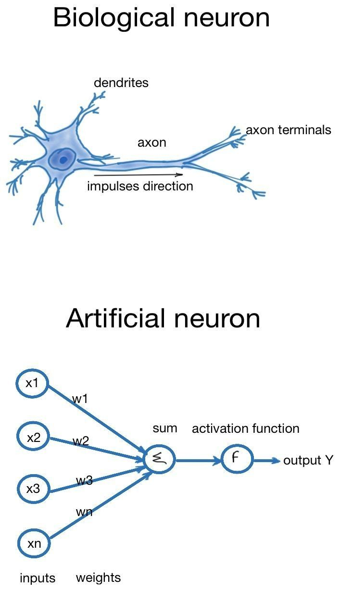
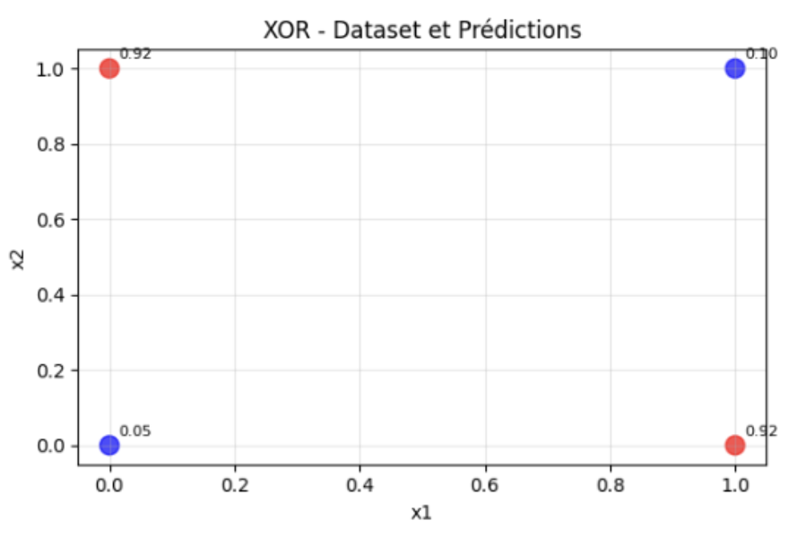
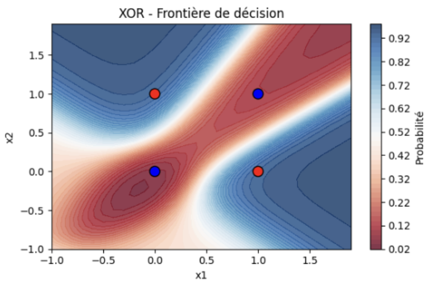
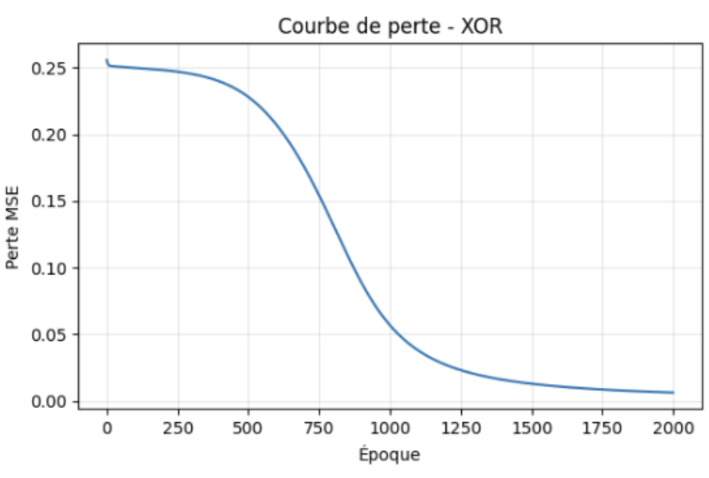
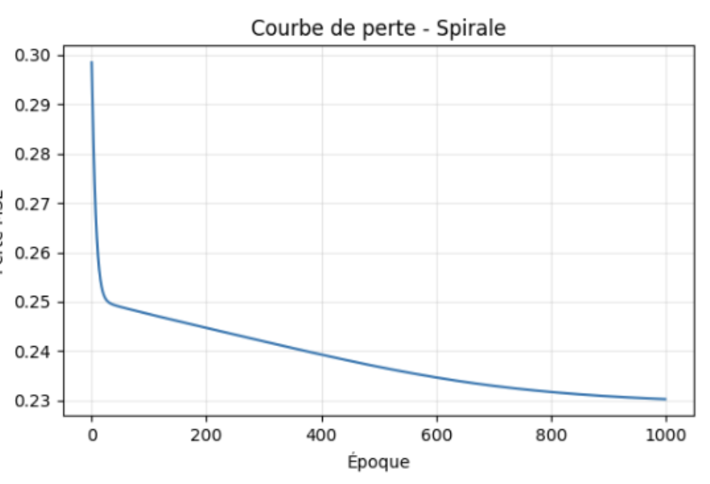
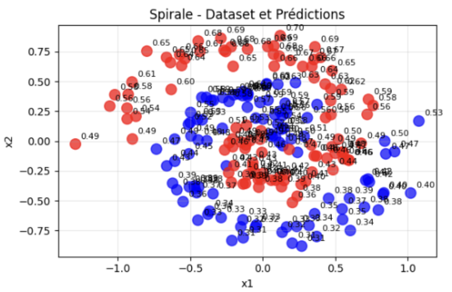
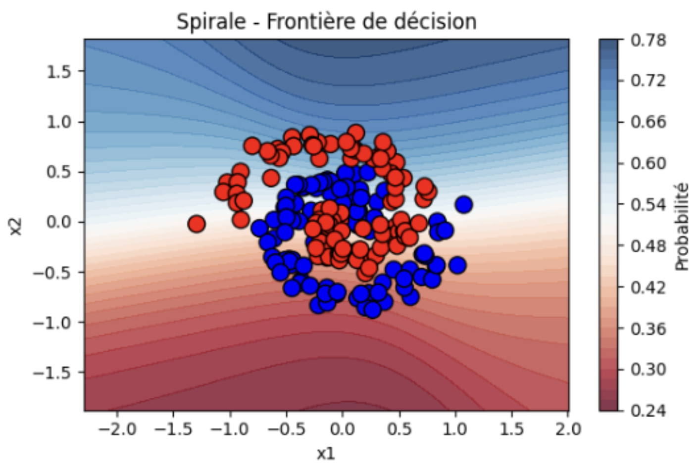

NumPy — for all vectorized calculations, matrix manipulation, derivation, etc.
Matplotlib — for visualizations: loss, decision boundaries, etc.
No “high-level” ML framework (no TensorFlow, PyTorch, etc.): everything is implemented “manually.”
Fundamentals
Neurons: from biology to computer science
Artificial neural networks are inspired by the functioning of the human brain. A biological neuron receives signals via its dendrites, processes them, and then sends a signal via its axon if the excitation is sufficient.

In computer science, we model this process in a simplified way :
The inputs $x_1, x_2, ...$ correspond to the received signals.
Each entry is multiplied by a weight $w_1, w_2, ...$ that represents its importance.
We add everything together and add a bias $b$.
Finally, the result is passed through an activation function $\sigma$ (sigmoid function), which acts as the “activation threshold” of the biological neuron.
The value calculated by this neuron simply becomes the “signal” transmitted to the neurons in the next layer, allowing several neurons to be chained together to form a complete network.
Architecture
Input layer :
This is the first layer that receives the input data, with each feature represented by a neuron.
Hidden layers :
The intermediate layers perform the processing and calculations; you can choose how many neurons to put in them.
Output layer :
The final layer that produces the network's output, either a single neuron (e.g., binary prediction) or several (e.g., multi-class classification).
Loss function
The MSE function simply measures how wrong the network is. The smaller the value, the more accurately the network predicts the expected outputs.
$$
L = \frac{1}{N} \sum_{i=1}^N (y_i - \hat{y}_i)^2
$$
Xavier initialization
The weights are initially chosen to prevent signals from becoming too large or too small as they pass through the layers, which helps the network learn faster.
Training Pipeline
Forward Propagation
Each neuron performs its calculations and sends its result to the next layer. The forward pass involves passing data from the beginning to the end of the network to obtain a prediction.
Backpropagation
This is how the network learns: we look at the final error, then work our way back layer by layer to adjust the weights and bias in order to make better predictions next time.
Gradient descent
Forward + backprop is repeated several times (epochs), gradually adjusting the weights until the error is minimal.
Datasets
Symbol
Significance
Interest
XOR
4 simple combinations of 0 and 1 as input
Used to verify that the network can learn a simple but non-linear rule: the output is 1 only if the inputs are different.
Spirale 2D
Points wound in two spirals
Used to test whether the network can trace a complex decision boundary. If it works, it means that your implementation is capable of solving problems that are more difficult than a simple XOR.
Visualization

XOR – Dataset and Predictions :
Shows the 4 input points and what the network predicts after training. The closer the predictions are to 0 or 1 correctly, the better the network has learned.

XOR – Decision Boundary :
Visualize how the network separates the 0s and 1s in the plane. A good boundary looks like an X that clearly separates the classes.

Loss Curve – XOR :
MSE loss gradually decreases over time → a sign that the network is learning.

Loss Curve – Spiral :
Same idea as for XOR, but on a more complex problem. We want to see the loss decrease steadily.

Spiral – Dataset and Predictions :
Each point has a predicted probability (0 = blue, 1 = red). The better the points are classified (close to the correct color), the better the network has understood the problem.

Spiral – Decision Boundary :
The transition zone between red and blue shows how the network separates the two spirals. The closer the boundary follows the shape of the spirals, the better the learning.
What I have learned
How a network calculates outputs from inputs
Why weight initialization and learning rate are important
How to visualize learning and the decision boundary
Understanding the step-by-step process of forward and backpropagation